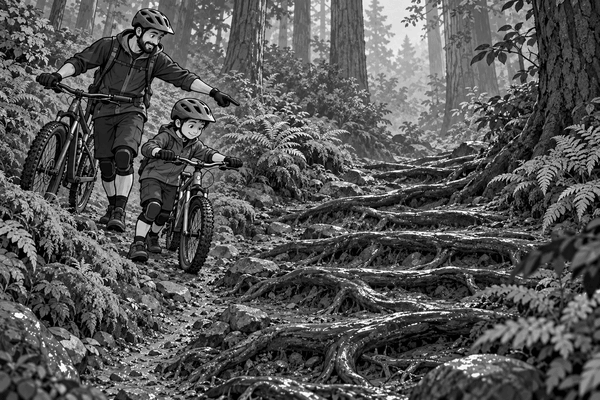

FICTION
Rain had fallen during the night.
Now drops shone on every leaf in Blackwood Forest.
Tom and Dad rolled their mountain bikes from the van.
They checked their helmets.
They tested their brakes.
They pressed each tyre with a thumb.
Everything was ready.
Today they would ride the Thousand-Root Trail.
It twisted downhill towards an old stone bridge.
“Why is it called that?” Tom asked.
Dad pointed into the trees.
Roots crossed the path like a giant wooden net.
“Oh,” said Tom. “That explains it.”
They began slowly.
The first part of the trail was soft and quiet.
Then Tom reached a row of dark roots.
He squeezed his brake as his front wheel touched one.
The tyre slipped sideways.
Tom put one foot down and stopped.
“Wet roots can be very smooth,” Dad said.
“Do your slowing before you reach them.”
Tom pushed back to try again.
This time, he slowed on the dirt.
He looked towards the clear path ahead.
His pedals stayed level.
He rolled across with quiet hands.
Bump. Bump. Bump.
The tyres stayed straight.
Bike fact: Wet roots can be slippery because their smooth surface gives tyres less grip. Riders slow down before them and try to cross smoothly.
Farther down, the roots became larger.
Some lay along the trail.
Others crossed it.
Tom chose the straightest line he could see.
He did not race.
He left a wide gap behind Dad.
Then they reached a steep root staircase.
The shiny steps dropped between two trees.
Tom stopped at the top.
He looked at the steep roots.
He looked at the narrow safe path beside them.
“I am going to walk this part,” he said.
Dad smiled.
“That is a good trail decision.”
They climbed off and pushed their bikes carefully down.
There was no prize for taking a risk.
At the bottom, the trail became gentle again.
Tom climbed back onto his bike.
A huge web of roots filled the final bend.
He slowed before it.
He looked ahead.
Then he rolled across.
His arms and legs moved with the bumps.
The wheels hummed onto firm ground.
A stream flashed between the trees.
The old stone bridge appeared ahead.
Tom stopped beside it and grinned.
“Were there really one thousand roots?” he asked.
Dad looked back up the forest.
“I lost count after twenty.”
Tom laughed.
The trail had been slippery.
It had also taught him when to ride—and when to walk.
1. What made the roots slippery?
2. When did Tom slow down?
3. What did Tom do at the steep root staircase?